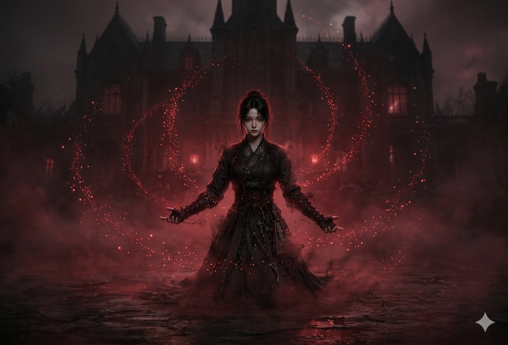

🔊 소리 켜기
잔혹 미스터리 · 고딕 호러
바리
:
핏빛 안개의 저택
▶ 저택으로 들어간다
25730011 · 정유진
잔혹 미스터리 · 고딕 호러
바리
:
핏빛 안개의 저택
"모든 치유와 기적적인 연명은,
동일한 핏줄을 나눈 자의 육신과 고통을 통해서만 이루어진다."
▶ 저택으로 들어간다
25730011 · 정유진
∥ 정지
// GAME PAUSED
▶ 계속하기
다음 실험체로 전락
GAME OVER
// 혈청 없이는 영주의 문턱을 넘을 수 없다
혈청 없이 문을 두드리는 자는
이 저택에서 또 하나의 실험 재료가 될 뿐이다.

↺ S1 으로 복귀
가문의 기록 · 최종 판정
↺ 처음부터 다시
바리 : 핏빛 안개의 저택
의지
0
온기
0
광기
0
KEY (혈청)
FALSE
// S1 · 잿빛 미로 정원
연대
FALSE
현재 씬
S1
페이즈
Phase 1 · 저택의 문턱
🩸
기록 영상 유실됨
— 안개가 화면을 집어삼켰다 —
PHASE 1 · 저택의 문턱
S1
잿빛 미로 정원
⚠ RED · 임계값 도달
◈ 광기 ≥ 20 · 환각 발동
1
8
자동 진행까지
PHASE 1
저택의 문턱
잿빛 미로 정원
S1 · 돌아온 사생아
◀
이전
∥
정지
♪
SOUND